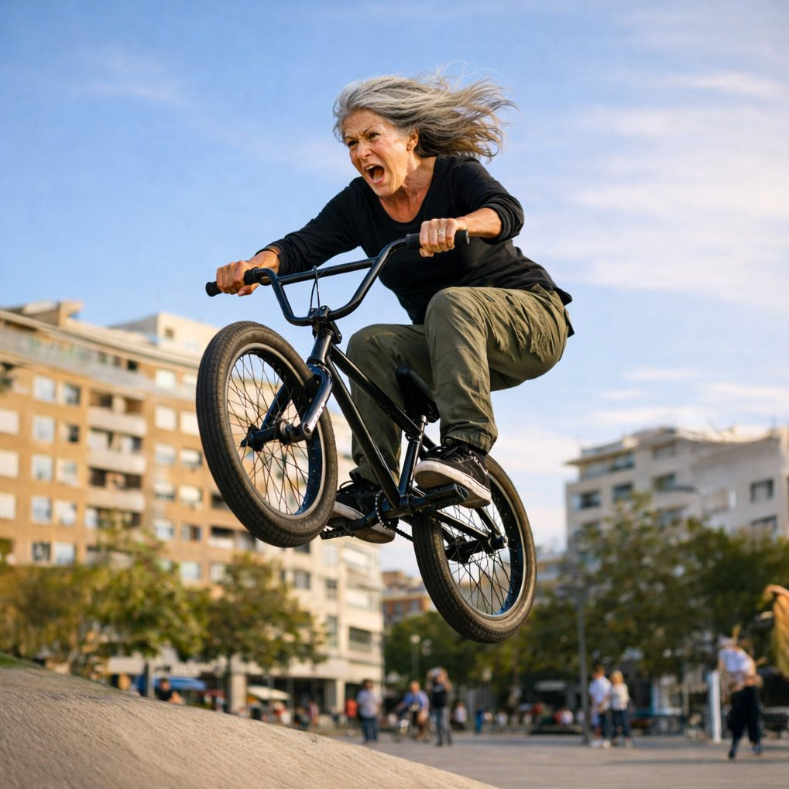

Twee campagnes, twee pagina's
Ronde 2 van de vertaling van Jans rationale. Elke pagina draagt één campagne.

Campagne 1
Xtreme 65
Trekt de aandacht: een 65-plusser in een gestoorde stunt, en de badkuip als dezelfde acrobatiek. Gezond verstand is een inloopdouche in één dag.
Bekijk de pagina →
Campagne 2
Badkamergevoel
Bouwt het merk: een reeks vragen en stellingen die 'badkamergevoel' aan CK Service koppelt, met premie en getuigen van klanten en vakmensen.
Bekijk de pagina →